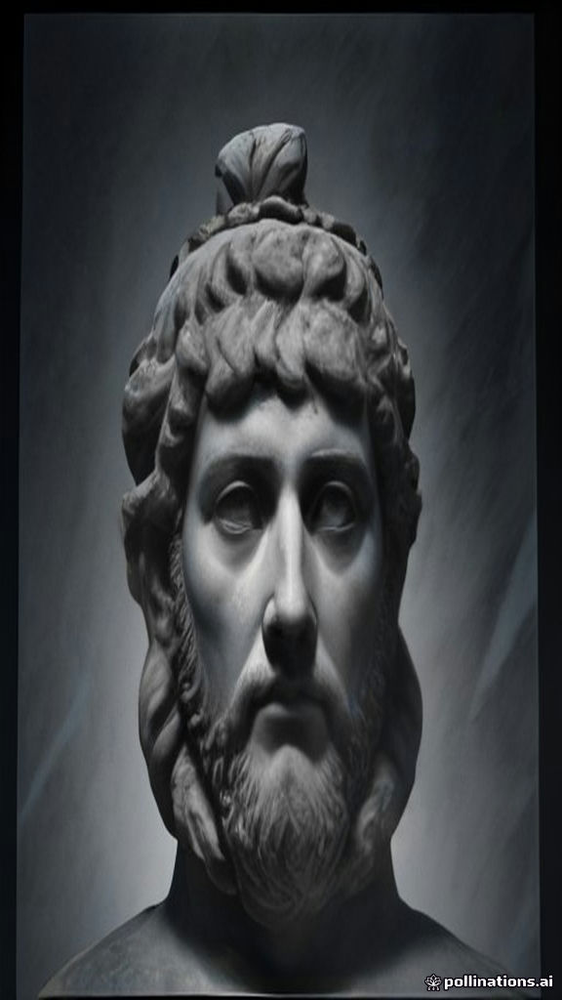
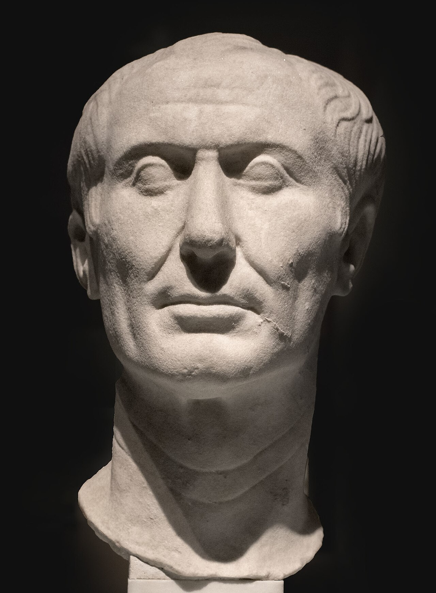
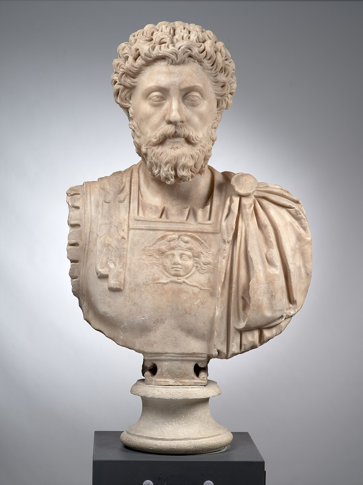

MARCUS AURELIUS // MEDITATIONS
LAW 04




EVERY TIME YOU
LOSE YOUR TEMPER…
YOU LOSE.
RULED THE GREATEST
EMPIRE ON EARTH.
BETRAYED. MOCKED. TESTED.
HE NEVER LOST CONTROL.
NOT ONCE.
"How much more harmful are the consequences of anger… than the circumstances that aroused them."
THE MOMENT YOU SNAP—
YOU HAND OVER
YOUR POWER.
YOUR POWER.
ANGER DOESN'T MAKE YOU STRONG.
IT MAKES YOU EASY.
STAY COLD WHEN THE WORLD
TRIES TO MAKE YOU BURN.
UNTOUCHABLE
THE STOIC WEAPON. USE IT.